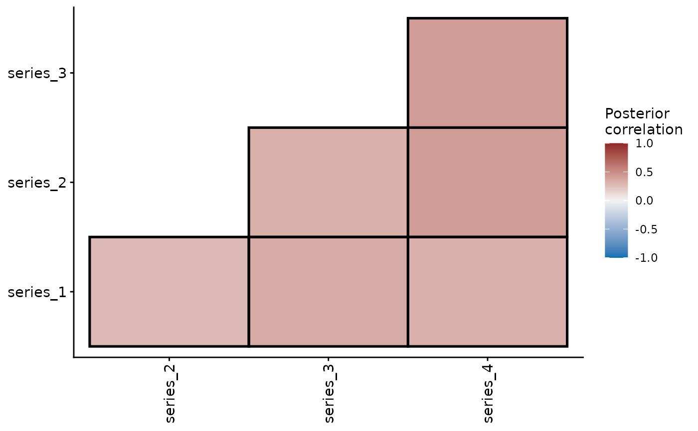

Set up latent correlated multivariate Gaussian residual processes in mvgam. The constructor records its arguments. The model evaluates them against the data.
Usage
ZMVN(
time = NA,
series = NA,
gr = NA,
subgr = NA,
n_lv = NULL,
cor = TRUE,
trend_map = NULL,
df = Inf
)Arguments
- time
The unquoted name of the
numericorintegervariable indatathat indexes the units whose latent residuals are correlated. Defaults totime, as for the other trends. The units can be sites, plots or any other replicate.ZMVN takes these values at any spacing. The likelihood is \(x_{u, :} \sim MVN(0, \Sigma)\) with \(\Sigma\) indexed by series alone. The gap between two units enters nowhere. Use ZMVN for spatial or otherwise non-temporal units, where gaps are natural: dropped sites, stratified k-fold refits or irregular sampling grids.
- series
The unquoted name of the
factorvariable indatathat names each row's series. Its levels fix the order of the series. A trend needs this column even for a single series. Defaults toseries.- gr
An optional grouping
factorindatathat sets up hierarchical residual correlations. Each level's correlation matrix shrinks toward a global one by the weightalpha_cor_trend, as trend_constructors sets out. Withoutsubgr, the series column names the units within each level.- subgr
A subgrouping
factorindatanaming the units within each level ofgr, from which the series are built as trend_constructors describes. For species (species) counted at sites (site) in regions (region),time = site,gr = regionandsubgr = speciescorrelate the species' residuals within each region.- n_lv
The number of latent factors to estimate for dynamic factor models. When
n_lvis smaller than the number of series, the latent processes are modelled asn_lvfactors with estimated loadings onto the series. Defaults toNULL, in which case one latent process is used per series.- cor
Logical. Include correlated process errors as part of a multivariate normal process model? IfTRUEand ifn_series > 1in the supplied data, a fully structured covariance matrix will be estimated for the process errors.AR()andRW()default toNULL, which resolves toFALSEfor an ungrouped trend and toTRUEwhenevergrnames a grouping variable: a grouped trend estimates correlations among thesubgrunits within each level ofgr, which is the modelgrexists to specify.VAR()andZMVN()always estimate correlations and refusecor = FALSE, as doAR(gr = ...)andRW(gr = ...).CAR()defaults toFALSE.- trend_map
Optional specification of which latent process each series maps onto. It fixes the loadings of a dynamic factor model. See
mvgamfor the accepted formats. Defaults toNULL.- df
Degrees of freedom for the latent process innovations. Defaults to
Inf, which gives Gaussian innovations: a t with infinite degrees of freedom is a normal. Setdf = NAto estimate them, or supply a number above2to fix them.Finite degrees of freedom let the latent process absorb an occasional large shock while
sigma_trendstays at the scale of ordinary variation. That suits boom-and-bust population series and outbreak dynamics. The innovations follow a multivariate t. Because it shares one innovation scale across the series at each time point, large innovations tend to occur together. Each series keeps its own direction and magnitude. A shock in one series says nothing about the sign of the others. One series can also stay unmoved by an event that moves its neighbours.corsets the correlation between series exactly as it does for Gaussian innovations. The degrees of freedom set how heavy the tails of the innovations are.When
df = NAthe degrees of freedom are estimated asnu_trend, with a defaultgamma(4, 0.3)prior. Thepriorargument replaces it, for exampleprior(gamma(2, 0.1), class = "nu_trend").get_priorlistsnu_trendwith the other trend classes.Three caveats apply. The bound of
2is required. Below it the innovations have no finite variance. An autoregressive trend then has no stationary covariance to start from. Above it, the first states of an autoregressive trend take the stationary mean and covariance. Their distribution matches the stationary law exactly under Gaussian innovations alone. A finite mix of t variates has heavier tails than the infinite sum that defines that law. The degrees of freedom are informed only through the tail of the latent process. They are weakly identified in short series: below roughly 200 time points, the posterior stays close to its prior.VAR()samples its states directly andPW()has no innovations. Neither takesdf.
Identification
A factor model with sampled loadings fits equally well under any reordering or sign change of its factors. Some models also fit equally well under any rotation. mvgam reports one version, chosen by the dynamics of the factors:
AR()factors take their own coefficients, as doRW()andAR()factors withma = TRUE. A rotation would mix those coefficients. After sampling, the factors of every draw are reordered and signed to agree with one reference. The loadingsZ, the factor pathslv_trendand the coefficientsar1_trendortheta1_trendmove together. Factors are numbered by the variance they explain, largest first.RW(),VAR()andZMVN()factors without a moving-average term are unchanged by rotation. So areAR()factors withcoef_sharing = "shared"and no moving-average term. Following Heaps & Jermyn (2024), generated quantities rotate each draw to lower-triangular loadingsZ_tildewith a non-negative diagonal. The factor paths rotate tolv_trend_tilde. A VAR factor model rotates its coefficients toPhi_trend_tilde.
Post-fit methods use the identified loadings and factor paths.
shared_variation() and residual_cor() are the same under every
version.
A trend_map keeps its fixed entries on Z exactly. A
by = lv_axis() smooth ties each factor to its own covariate
effect. Neither takes a rotation. For a model with every loading
sampled, the loadings_prior
argument of mvgam() replaces the default iid Student-t prior
on Z with a structured matrix-normal prior. That prior is built
from per-series features, pairwise distance matrices or both. See
mvgam for its arguments.
Setting loadings_prior = "mgp" (or
loadings_prior = list(column_shrinkage = "mgp")) switches
the column scaling to the multiplicative gamma process prior of
Bhattacharya & Dunson (2011), which shrinks later columns of Z
toward zero with increasing strength. n_lv is then a truncation
ceiling on the factor count. active_factors reports
the posterior distribution of the number of active factors.
References
Heaps, S. E. and Jermyn, I. H. (2024). Structured prior distributions for the covariance matrix in latent factor models. Statistics and Computing, 34:143. doi:10.1007/s11222-024-10454-0
See also
jsdgam() fits ZMVN() factors across species.
residual_cor() and ordinate() interpret the fitted
correlations. The
dynamic factor vignette builds factor
models with a partial trend_map. The
integrated distribution model article
shares one latent process across several observation families.
Other trend models:
LLT(),
PW(),
RW(),
list_trend_types(),
lv_axis()
Examples
# \dontrun{
# Simulate counts of four series whose latent effects are correlated
# at each time point but independent over time.
set.seed(2)
simdat <- sim_mvgam(
family = poisson(),
n_series = 4L,
n_timepoints = 120L,
trend_model = ZMVN(),
prop_trend = 0.9
)
mod <- mvgam(
y ~ 1,
trend_formula = ~ ZMVN(),
data = simdat$data_train,
family = poisson(),
chains = 2,
silent = 2
)
summary(mod)
#> Family: poisson
#> Links: mu = log
#> Formula: y ~ 1
#> Data: simdat$data_train (Number of observations: 360)
#> Series: 4
#> Trends: ZMVN
#> Draws: 2 chains, each with iter = 2000; warmup = 1000; thin = 1;
#> total post-warmup draws = 2000
#>
#> == Observation Model ==
#> Regression Coefficients:
#> Estimate Est.Error l-95% CI u-95% CI Rhat Bulk_ESS Tail_ESS
#> Intercept 1.68 0.06 1.55 1.81 1.00 1300 1263
#>
#> == Trend Model ==
#> Trend Specific Parameters:
#> Estimate Est.Error l-95% CI u-95% CI Rhat Bulk_ESS
#> sigma_trend[series_1] 0.75 0.08 0.60 0.92 1.00 928
#> sigma_trend[series_2] 0.69 0.07 0.55 0.84 1.00 960
#> sigma_trend[series_3] 0.82 0.09 0.68 1.02 1.00 1063
#> sigma_trend[series_4] 0.76 0.08 0.62 0.93 1.00 1000
#> Tail_ESS
#> sigma_trend[series_1] 1355
#> sigma_trend[series_2] 1336
#> sigma_trend[series_3] 1396
#> sigma_trend[series_4] 1435
#>
#> Draws were sampled using sampling(NUTS). For each parameter, Bulk_ESS
#> and Tail_ESS are effective sample size measures, and Rhat is the potential
#> scale reduction factor on split chains (at convergence, Rhat = 1).
#>
#> Next steps:
#> - `pp_check(fit)`: posterior predictive checks
#> - `residual_cor(fit)`: implied cross-series correlations
#> - `loo(fit)` / `loo_compare(...)`: model fit + comparison
#> Use `how_to_cite(fit)` for a methods paragraph and `methods_md(fit)` for its equations.
# The correlations among the series that ZMVN() estimates
rc <- residual_cor(mod)
rc
#> Residual correlations from an mvgam fit
#> Source : correlated innovations
#> Covariance : stationary
#> Series : 4
#> Mean |r_ij| (i != j): 0.35 [0.22, 0.48]
#> Pairs with prob_nonzero > 0.95: 6 / 6
plot(rc)

# Next: jsdgam() fits ZMVN() factors across many species
# }